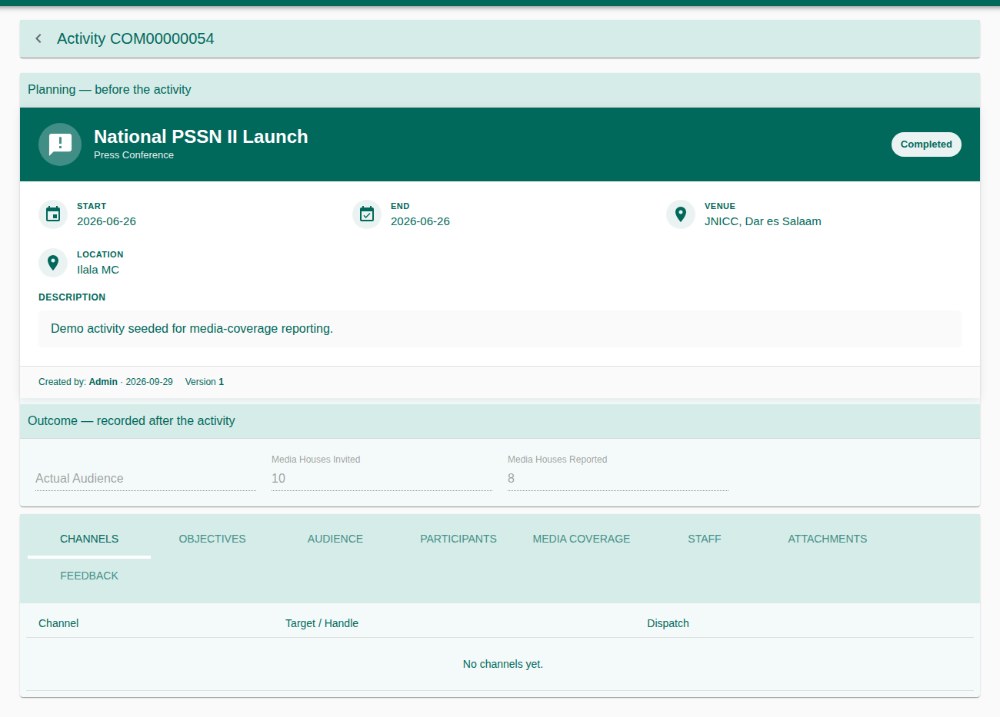
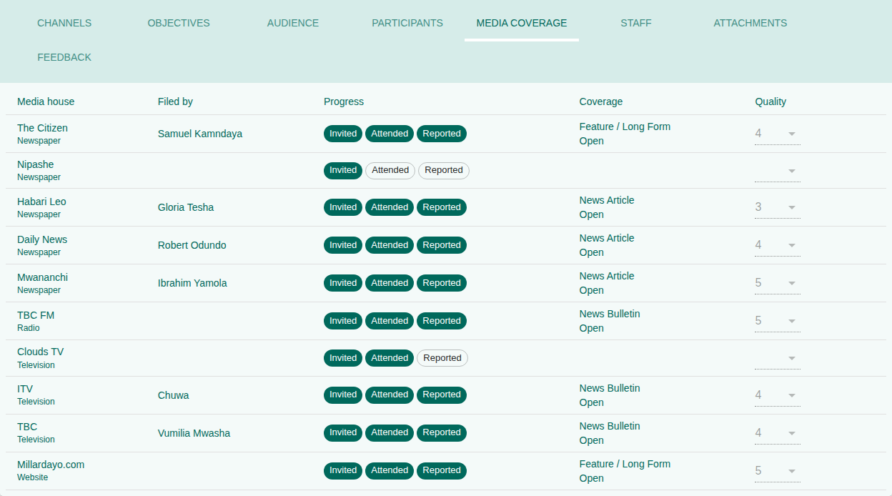
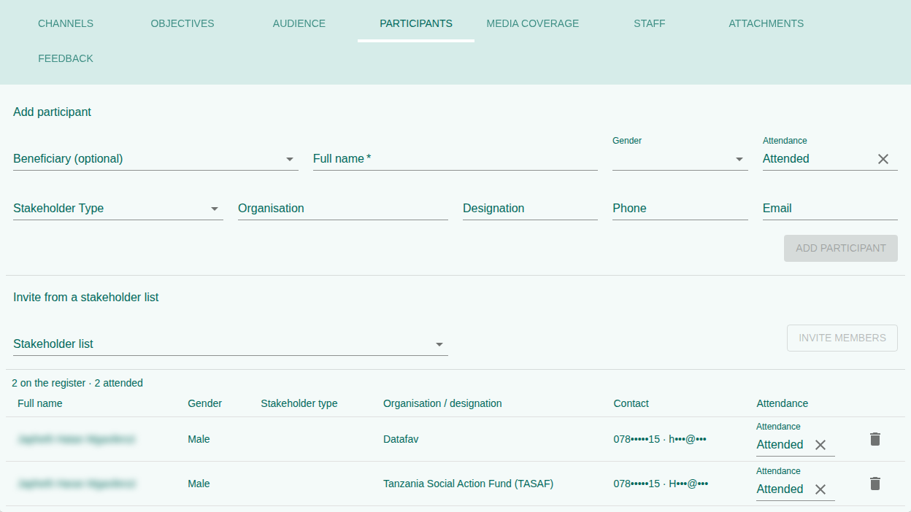
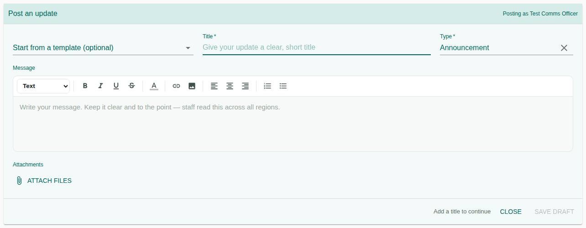
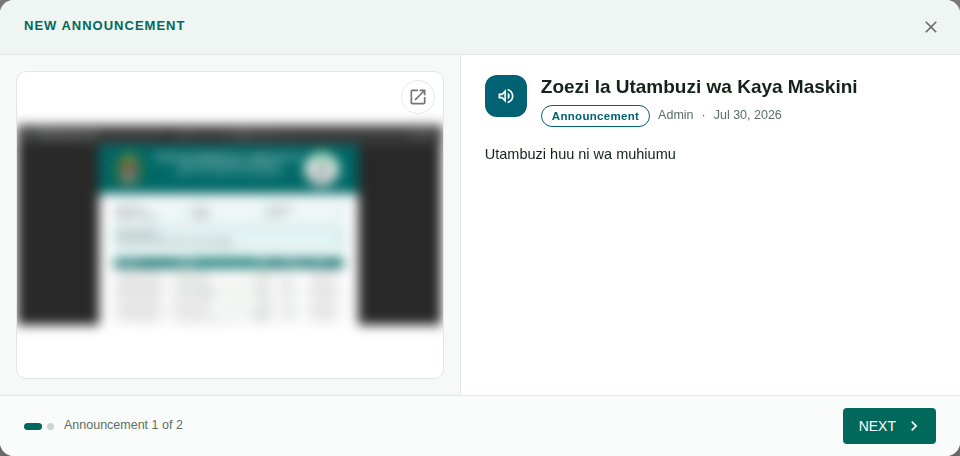
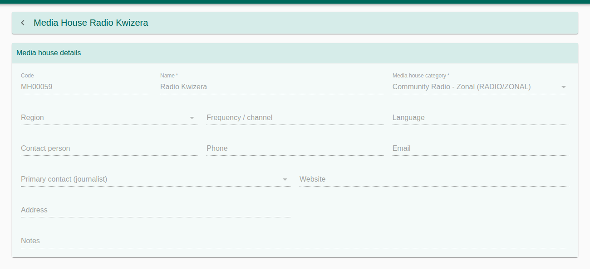
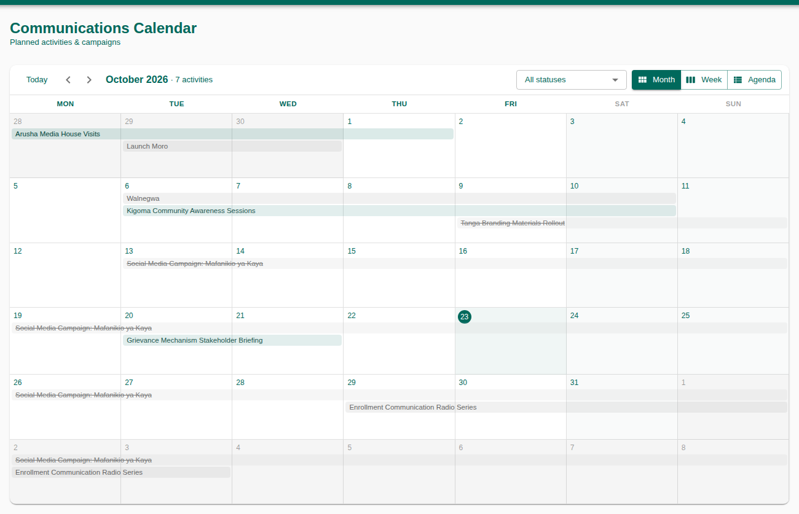

Daily procedures for planning communication activities and events, posting to the staff News Feed, and keeping the media house and journalist registries. An activity goes from a draft through approval to a completed record with its audience, media coverage, objectives and feedback.
1. Purpose, Roles, and Access
| Role | Typical work |
|---|---|
| Communication officer | Plan activities and events, record outcomes, keep the media registries. |
| Communication approver | Approve activities and News Feed posts. |
| Staff | Read the News Feed; post updates for approval. |
| Management / M&E | Calendar and dashboard. |
Access & permissions
| Right | Grants |
|---|---|
220101–220104 | Search / create / update / delete activities and events. |
220110 | Approve or reject activities. |
220402 · 220502 · 220602 · 221402 · 220802 | Manage an activity's channels · objectives · staff · audience · feedback. |
220701 / 220702 | See / upload attachments. |
221901–221904 | The participant register of an event. |
221501 / 221502 / 221505 | Read the News Feed / write posts / publish posts. |
221601–221604 · 221801–221804 | Media houses · journalists. |
220901 / 220902 · 221101 / 221102 | Templates · library assets. |
221201 | Calendar and dashboard. |
2. Menus and Pages
| Menu | Used for |
|---|---|
| Activities | Media missions, press releases, briefings, campaigns and other activities. |
| Events | Public, internal and CSR events, with their participant register. |
| News Feed | Announcements and updates for TASAF staff. |
| Media Houses / Journalists | The media registries. |
| Library | Templates, brand assets and stakeholder lists. |
| Calendar / Dashboard | Planning view and summary. |
3. Create an Activity
- Open Activities and press + (or New activity on the calendar).
- Under Planning — before the activity: code, title, activity type (e.g. Media Mission, Press Release, Community Awareness Session), programme area, description, objective, start and end, venue or virtual platform, location, target audience and planned audience.
- Watch the conflict banner: Conflicts that block saving (red) or Warnings.
- Press Save. The tabs appear; they can only be filled after the first save.
- After the activity, fill Outcome — recorded after the activity: actual audience and media houses reported. Some figures are worked out from the Audience tab or the participant register.


4. Activity Tabs
| Tab | Records |
|---|---|
| Channels | Where the message goes: email, SMS, social media, radio, TV, print, website, community event; with the target (e.g. @tasaf_tz, TBC Taifa, 7pm news) and its dispatch status. |
| Objectives | Each objective with its indicator, target and what was achieved. |
| Audience | Stakeholder types and level (national, zonal, regional, PAA, community), planned and actual reach. |
| Staff | Staff assigned, with role (Owner, Contributor, Reviewer, Approver, Support) and status. |
| Media Coverage | Per media house: invited, attended, reported, coverage type, quality and link. |
| Participants | The register of people (events; section 6). |
| Attachments | Files, with preview and download. |
| Feedback | Feedback received: source (e.g. post-event survey, radio call-in), respondent, rating and comment. |


5. Status Workflow
| Status | Next |
|---|---|
| Draft | Submit · Cancel |
| Submitted | Approve · Reject (approver, 220110) |
| Rejected | Revise (back to Draft) |
| Approved | Schedule · Cancel |
| Scheduled | Start · Cancel |
| Ongoing | Complete · Cancel |
| Completed | Close |
| Closed | Archive |
| Cancelled · Archived | Final |
6. Events and the Participant Register
An event is created the same way under Events, with an event type: Public, Internal or Corporate Social Responsibility, and can be virtual or hybrid.
- Open the event's Participants tab and press Add participant: full name, stakeholder type, organisation and designation, phone, email. A participant can be linked to a beneficiary.
- Or choose Invite from a stakeholder list to add every member of a saved list at once.
- Set each person's attendance: Invited, Confirmed, Attended, Absent or Replaced.
The tab shows how many are on the register and how many attended; the actual audience of the event is taken from it.


7. News Feed and Announcements
Post an update
- Open News Feed and click Post an update….
- Optionally start from a template. Write the title and message; the editor has headings, bold, colour, links, images, lists and alignment. Attach files if needed.
- Choose the type: Announcement, Update, Media Highlight or Newsletter.
- Press Post (or Save draft). Posts wait for a communication officer's approval before others see them; the feed shows how many are awaiting approval.


Posts can be pinned to the top, edited, unpublished or deleted from the ⋮ menu. The search box looks through the latest posts.
Announcements at login
Published announcements a user has not read yet open in a window after they log in, one after the other (Announcement 1 of 3). Read moves to the next.


8. Media Houses and Journalists
Media houses
Each media house has a name, category, medium (newspaper, radio, TV, social media, website, blog), reach scope, language, frequency or channel, location, contact person, phone, email, website, and a primary journalist. Its page shows its coverage records and their quality.
Journalists
First and last name, gender, media house (or Freelance), role (Reporter, Editor, Presenter, Producer, Camera Operator, Photographer, Correspondent), beat, languages, phones, email, and accreditation number and expiry. Its page shows the stories filed and the last coverage.


9. Library
| Tab | Holds |
|---|---|
| Templates | A name, subject and message that fill a News Feed post when chosen. Inactive templates are hidden from the composer. |
| Assets | Brand assets, images, videos and documents for reuse. |
| Stakeholder lists | Named lists of people (name, organisation, location, phone, email) to invite to events. Deleting a list leaves people already invited on their events. |
10. Calendar and Dashboard
The Calendar shows activities in month, week or agenda view, filtered by status, with Training and Coordination activities alongside so clashes are visible. The Dashboard summarises activities by status and type, audience reach and media coverage.


11. Troubleshooting and Good Practice
| Problem | What to do |
|---|---|
| The tabs are missing | Save the activity first. |
| Save is disabled | Read the red conflict banner and change the time, venue or staff. |
| My post is not visible to others | It is awaiting approval. |
| An attachment fails to upload | The file is too large; reduce it or upload a link. |